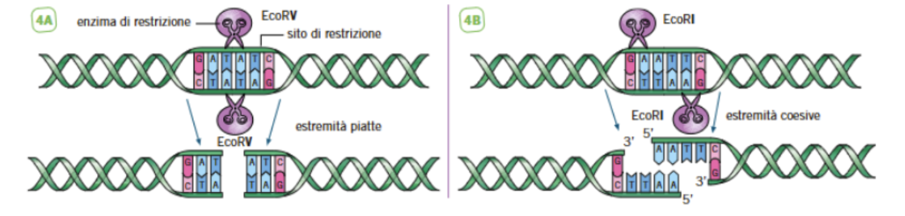
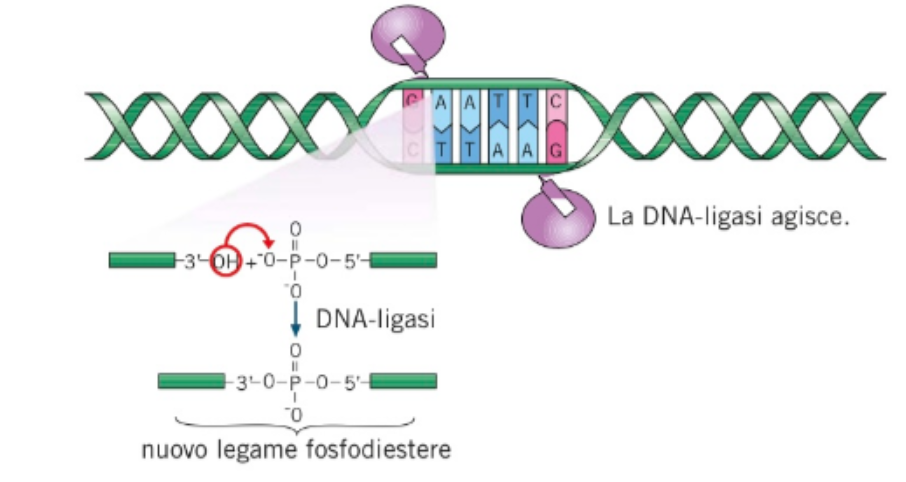
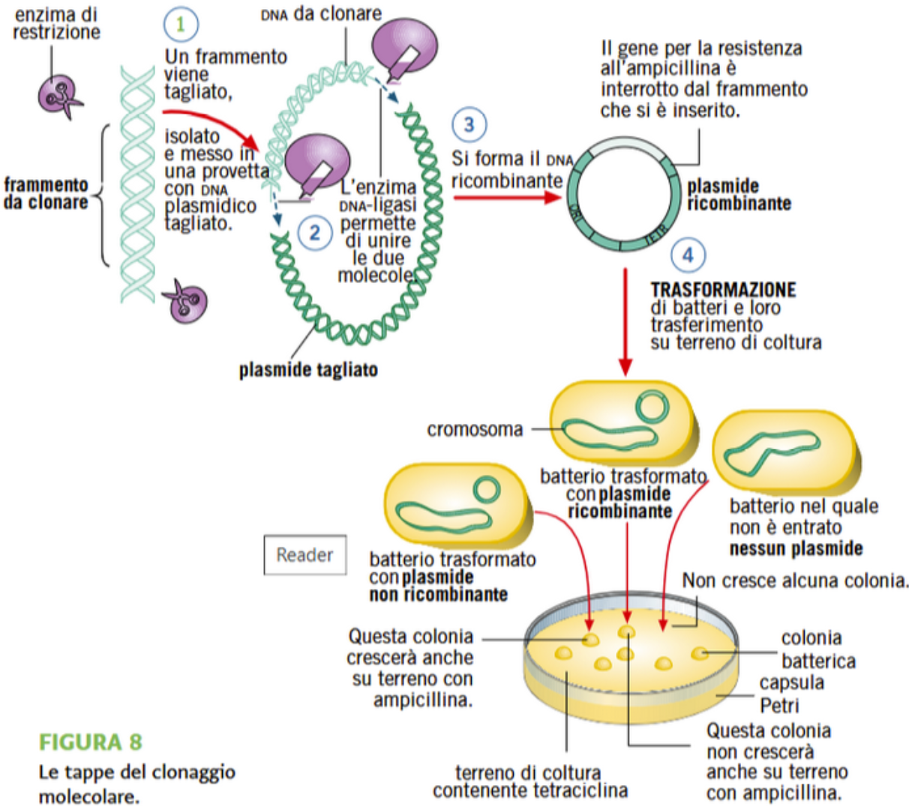
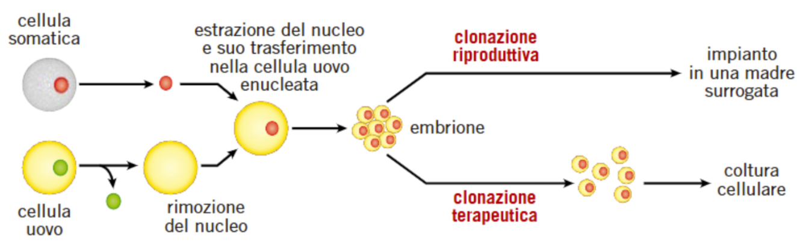
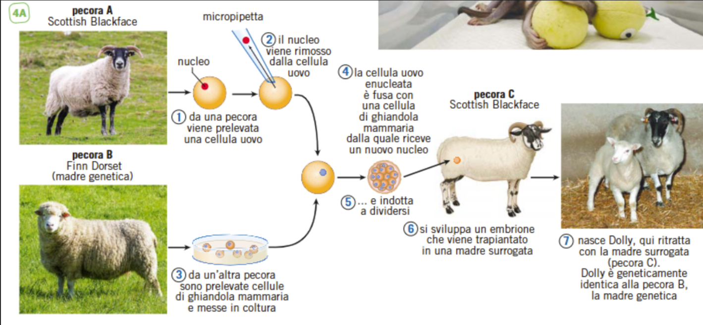

1 Biotecnologie
1.1 Ingegneria Genetica
1.1.1 Introduzione
l’ingegneria genetica è uno strumento delle biotecnologie moderne1
1 biotecnologia = utilizzare organismi viventi o loro prodotti per fini utili all’uomo
Infatti le biotecnologie di per sé sono antichissime, essendo tutto ciò che gli esseri viventi fanno e producono per i loro fini. Ne sono esempi le fermentazioni, l’allevamento e l’agricoltura → sono le cosiddette biotecnologie classiche/tradizionali, ovvero quelle sviluppate fin dalla nascita dell’homo sapiens per i propri fini
Per esempio, nel momento in cui gli uomini hanno capito che i semi caduti nel bosco producevano altri cereali si è fatta una selezione artificiale: la natura avrebbe fatto un certo corso e l’uomo è intervenuto per i suoi comodi
E’ stato così fino a quando due scienziati, circa nel 1975, si sono trovati a congresso e hanno unito le loro scoperte su cosa fare con i batteri e hanno fatto nascere la tecnologia del DNA ricombinante
Con questo evento nascono le biotecnologie moderne, una selezione artificiale un po’ più spinta2
2 quando faccio selezione artificiale, per esempio, scelgo un animale che ha un genoma che mi produce più latte e la faccio riprodurre (fitness darwiniana)
le biotecnologie moderne invece, sempre restando nell’esempio, modificano il DNA/genotipo per far si che la vacca produca più latte
oltre alla tecnica del DNA ricombinante, negli anni ’80 dopo di essa sono venute
l’elettroforesi (già si usava e si è sviluppata)
il metodo per sequenziare il DNA (inventato da Friedrich Senger ed ora automatizzato)
la PCR = termociclatore, strumento che amplifica il DNA, automatizza la produzione del DNA, in pochi minuti produce migliaia di DNA (Kary Mullis sotto cocaina ha sognato il meccanismo con cui svilupparla)
pochi anni fa invece, nel 2012 e nel 2017, due ricercatrici (un’americana e una francese), che hanno vinto il Nobel, hanno scoperto la tecnica CRISPR/CAS9: si può agire direttamente sul DNA cambiando i geni direttamente nel genoma. All’inizio delle biotecnologie moderne il termine “biotecnologie” non si usava molto, ma piuttosto “ingegneria genetica”: alla base delle biotecnologie c’era questa ingegnerizzazione, si andava a costruire qualcosa di nuovo che prima non c’era, introducendo nel DNA di un gene estraneo
1.1.2 Campi di Applicazione delle Biotecnologie
le biotecnologie sono applicate praticamente ovunque
agricoltura = biotecnologie verdi
organismi acquatici = biotecnologie blu
allevamento
industria = biotecnologie bianche
medicina (diagnosi e cura) = biotecnologie rosse
ricerca in campo biologico
protezione dell’ambiente = biotecnologie grigie
alimentazione = biotecnologie gialle
aspetti legali ed etici = biotecnologie viola
nanotecnologie
bioinformatica = biotecnologie oro
neutralizzazione di attacchi di armi biologiche = biotecnologie nere
1.1.3 Il DNA Ricombinante
Il DNA ricombinante è la prima tecnologia che è stata sviluppata: è nata nel 1972, anno nel quale i biologi Boyer e Cohen si incontrano in un congresso alle Hawaii e si scambiano le proprie idee
Noi sappiamo già che il DNA può cambiare attraverso mutazioni, tipi di ricombinazione… in modo spontaneo, senza intervento dell’uomo che non può regolare la produzione di proteine nelle cellule (a parte per un po’ di selezione artificiale) → queste mutazioni sono alla base dell’evoluzione
Fino agli anni ’70 il trasferimento di geni orizzontale (=ricombinazione di geni da un individuo all’altro) avviene autonomamente in natura solo nei batteri3. Con la nascita dell’ingegneria genetica sono state inventate metodologie per maneggiare il DNA anche negli animali e nelle piante che si riproducono in maniera sessuata. Queste metodologie nel loro insieme sono note come tecniche del DNA ricombinante
3 in realtà, si sa che anche degli eucarioti possono fare un trasferimento genico orizzontale (per esempio funghi e piante)
Con questa tecnologia è il biotecnologo a introdurre il gene che desidera in un determinato organismo vivente e questo gene poi si ricombina con il DNA della cellula ospite. Questo tipo di trasferimento può avvenire tra le cellule di uno stesso organismo, tra organismi di una stessa specie e tra specie diverse
le finalità del biotecnologo introducendo il gene possono essere
migliorare qualche funzione delle cellule dell’organismo in cui ha introdotto il gene
bloccare qualche gene per la produzione di una proteina dannosa
far produrre una nuova proteina a questo organismo in cui ha introdotto il gene
La tecnologia del DNA ricombinante, manipolando il DNA e trasferendolo nelle cellule, consente di produrre gli OGM, organismi geneticamente modificati. Quando il gene che viene introdotto non appartiene alla specie della cellula ricevente l’OGM che si ottiene è un organismo transgenico e il gene introdotto è chiamato transgene
Come funziona la tecnologia?
Facciamo l’esempio dell’insulina: produrre insulina per vie farmaceutiche è molto costoso, quindi è più conveniente farla produrre a un organismo, introducendo nel suo genoma il DNA che codifica per l’insulina
Avviene per tre tappe
si taglia con precisione dal genoma umano il gene che produce l’insulina
si introduce il DNA ricombinante nelle cellule dell’organismo
non sempre si può introdurre direttamente il DNA ricombinante nel DNA della cellula ospite, quindi si sfrutta un vettore4.
4 Quando è stata inventata la tecnica si usavano i batteri, quindi un esempio di vettore è il plasmide: comportandosi da episoma si introduce nel DNA della cellula ospite
1.1.4 GLI ENZIMI DI RESTRIZIONE
Già negli anni ’60 circa sono stati scoperti degli enzimi chiamati di restrizione, ovvero enzimi che tagliano il DNA solo in punti precisi della sequenza del DNA. Questi enzimi sono stati scoperti nei batteri, che li producono per lo stesso motivo, ovvero tagliare il DNA: i batteri nell’evoluzione hanno prodotto degli enzimi che tagliano i siti specifici dei batteriofagi5.
5 E’ una loro forma di sistema immunitario
come funzionano questi enzimi?
I punti esatti dove lavorano si chiamano siti di restrizione e sono specifici per ciascun enzima di restrizione e per ciascun batterio6. Tecnicamente, gli enzimi di restrizione sono delle desossiribonucleasi sito specifiche, che rompono il legame fosfodiesterico.
6 A questi enzimi viene dato un nome, che deriva dal batterio che li produce: per esempio EcoRI oppure EcoRV: le prime tre lettere derivano dal batterio: Eco = Escherichia coli; R sta per il ceppo del batterio: R = RY13; il numero romano indica quando è stato scoperto: I = il primo scoperto.
7 Due sequenze palindrome possibili sono per esempio GATATC (quella che taglia EcoRV) e GAATTC (quella che taglia EcoRI)
Questi enzimi di trascrizione tagliano vari tipi di sequenze, ma quelle che interessano la tecnologia del DNA ricombinante sono e devono essere palindrome7: sono sequenze che possono essere lette sia da destra che da sinistra e rimangono uguali.

Ci sono differenze nel modo in cui avviene il taglio operato da EcoRI e EcoRV
il taglio operato da EcoRV taglia a metà ⇒ le estremità che si formano si dicono flat ends
il taglio operato da EcoRI è sfalsato: taglia la prima catena polinucleotidica in un punto, la seconda in un altro ⇒ le due estremità che si formano si chiamano sticky ends
La cosa più difficile è analizzare la sequenza da DNA che voglio tagliare: si cerca di tagliare in un punto in cui c’è l’enzima di restrizione che taglia quel sito8. Esistono centinaia di enzimi di restrizione: una volta che ho individuato quello che mi serve lo compro da una società biotecnologica, perché gli enzimi si isolano facilmente dai batteri.
8 Perché la tecnologia del DNA ricombinante consiste nel prendere un gene estraneo e introdurlo all’interno di altro DNA, cosa che avviene grazie agli enzimi di restrizione
Per esempio, se serve l’enzima per la transaminasi umana, si cerca poi il gene che lo produce, poi cerca il plasmide che ha come sito di restrizione la stessa sequenza palindroma su cui può agire quell’enzima di restrizione.
1.1.5 UN’INVENZIONE RIVOLUZIONARIA
Una volta trovato il modo per tagliare con precisione il DNA, i biologi cominciarono a progettare di unire frammenti di restrizione di diversa provenienza per produrre nuove molecole, non esistenti in natura: molecole di DNA ricombinante. Un’operazione di “taglia e cuci” sulla doppia elica richiede
uno strumento per tagliare, ovvero gli enzimi di restrizione
uno strumento per cucire, ovvero la DNA-ligasi → enzima contenuto in tutte le cellule viventi, capace di legare le estremità 5’ e 3’ libere di molecole di DNA, agente durante la duplicazione per unire i frammenti che via via si formano sull’elica discontinua (i frammenti di Okazaki)
L’enzima DNA-ligasi, estratto dalle cellule, può agire da collante tra due frammenti di restrizione se questi hanno estremità piatte o se estremità coesive complementari

Boyer aveva elaborato una tecnica di “taglia e cuci” sul DNA in vitro e riusciva a costruire molecole di DNA ricombinante in provetta, sfruttando il lavoro degli enzimi di restrizione e della DNA-ligasi → non aveva però modo di moltiplicare queste molecole e produrne quantitativi utili a qualsiasi scopo
Cohen era invece riuscito a trasformare artificialmente i batteri, ovvero aveva trovato il modo di far entrare nelle cellule batteriche molecole di DNA estranee, concentrandosi su plasmidi recanti alcuni geni per la resistenza agli antibiotici → in un certo senso “sfruttava” i batteri poiché, una volta trasformati, riproducevano i plasmidi da lui inseriti nelle cellule, mentre di solito si occupano di duplicare solo il proprio DNA (se ben allevato, un batterio come Escherichia coli si duplica in soli 20 minuti, quindi in 12 ore si ottengono quasi 70 miliardi di discendenti da un’unica cellula, e altrettante saranno le molecole di DNA contenute in ciascun batterio)
combinando le due metodiche, Boyer e Cohen dapprima crearono in vitro un plasmide formato da DNA ricombinante e successivamente lo utilizzarono per trasformare cellule del batterio Escherichia coli
il plasmide ricombinante era il risultato del legame di due plasmidi recanti la resistenza ad antibiotici diversi, entrambi tagliati con l’enzima di restrizione EcoRI: resistenza alla tetraciclina + resistenza alla canamicina
I batteri trasformati con questo plasmide ricombinante erano resistenti a entrambi gli antibiotici, dunque la nuova molecola di DNA creata in laboratorio era perfettamente funzionante in vivo. In sostanza, i due scienziati avevano trovato il modo di unire frammenti di DNA contenenti geni diversi e di far funzionare questi geni in una cellula vivente ⇒ nascita della tecnica del DNA ricombinante.
1.1.6 LA TECNICA DEL CLONAGGIO MOLECOLARE
l’operazione eseguita per la prima volta da Boyer e Cohen è chiamata clonaggio molecolare perché consiste nel produrre grandi quantità di una determinata molecola di DNA tramite la proliferazione di un clone, ovvero un enorme numero di cellule batteriche tutte derivate da un’unica capostipite
qualsiasi frammento di DNA tagliato con un enzima di restrizione può essere clonato in un plasmide che funziona da vettore = è una molecola che può contenere il DNA da clonare e che può replicarsi all’interno di una cellula
i plasmidi scelti come vettori hanno tre caratteristiche fondamentali:
contengono diversi siti di clonaggio, siti di restrizione unici che rappresentano i potenziali punti di inserimento del DNA da clonare
portano marcatori selezionabili, ovvero sequenze che permettono di distinguere le cellule che hanno incorporato il vettore dalle altre
→ esempio sono i geni per la resistenza agli antibiotici:
- possiedono un’origine di replicazione che ne permette la riproduzione, ne regola il numero di copie e ne sincronizza la duplicazione con quella del cromosoma batterico
Dunque questa tecnologia usa i plasmidi come vettori. Immaginiamo che in un laboratorio serva un batterio che produca la transaminasi e serva quindi il gene che la contiene. Una volta isolato il gene della transaminasi nel fegato, si trovano dei siti che comprendano nella sequenza tutto quello che mi serve. A questo punto taglio nel DNA di origine, lo isolo e lo utilizzo per la tecnologia del DNA ricombinante9.
9 Accade tutto in una beuta in cui inserisco i frammenti da clonare, l’opportuno plasmide, ovvero un plasmide che ha due geni per la resistenza agli antibiotici, e il sito di restrizione che ho usato per tagliare il gene estraneo deve essere all’interno di uno dei due geni per la resistenza agli antibiotici
Con lo stesso enzima taglio il plasmide, costruito apposta perché ha il sito di restrizione all’interno di uno dei due geni per la restrizione. In questa beuta possono succedere tre cose:
il plasmide non entra → dal punto di vista della resistenza agli antibiotici questo batterio non resisterà
il plasmide entra ma non è ricombinato (le sticky ends si richiudono) → dal punto di vista della resistenza agli antibiotici questo batterio resisterà a entrambi gli antibiotici
il plasmide si ricombina con il DNA → dal punto di vista della resistenza agli antibiotici questo batterio resisterà a uno dei due antibiotici
Non si sa quanti plasmidi siano ricombinati, sono pochissimi, e quindi devo selezionare questi batteri attraverso un marcatore selettivo. Poiché questi batteri resistono in maniera diversa agli antibiotici, l’uso degli antibiotici diventa il marcatore selettivo per selezionare il batterio giusto, ovvero quello che resiste ad entrambi gli antibiotici.

Se io semino i batteri (che prendo dalla beuta) in una piastra, essi crescono e formano colonie di batteri tutti identici tra loro. Nel terreno in coltura metto ampicillina e tetraciclina:
Tetraciclina:
i 2 batteri con il plasmide resistono alla tetraciclina
dal batterio senza plasmide non cresce nessuna colonia
⇒ mettendo la tetraciclina i batteri senza plasmide muoiono e già questa è una forma di selezione
Dopo che ho fatto ciò, faccio un’altra operazione, la “replica plating” (=replica della capsula): siamo arrivati ad avere il “master plate” = ho le colonie solo di batteri che hanno il plasmide ricombinante o non ricombinante. Ora faccio la replica di questa piastra, cioè prendo un tampone (cilindro di plastica ricoperto da un tessuto) e lo metto perfettamente sulla piastra → ora ho dei batteri di ciascuna colonia sul tampone.
Ampicillina: prendo un’altra piastra su cui metto l’ampicillina (tipo poggiando il tampone sulla piastra):
il batterio con il plasmide non ricombinante sopravvive all’ampicillina
il batterio con il plasmide ricombinante non sopravvive all’ampicillina
⇒ rimarranno solo quelli che resistono all’ampicillina, che sono quelli che non mi interessano
Allora vado a recuperare la colonia che non è cresciuta, ovvero la colonia d’interesse, e la replico → coltivo solo i batteri che hanno all’interno il plasmide ricombinato.
Una volta che ho coltivato questi batteri posso:
clonare il gene → ma ciò non si fa praticamente più perché ora c’è la PCR che me lo fa, anche in meno spazio
isolare il prodotto del gene, che sarà la mia proteina d’interesse → fare batteri che producono proteine
1.1.7 DALLA RICERCA AGLI IMPIEGHI PRATICI
La tecnica del DNA ricombinante in primis serve nel campo della ricerca, ma può essere usata anche per fare altre cose. Ha molte applicazioni in medicina, tuttavia gli impieghi pratici delle nuove scoperte e invenzioni non si limitano a questo campo
alcune delle altre applicazioni degli OGM sono
- in campo farmacologico: biofarmaci
in farmacia si possono trovare circa 20 farmaci ricombinanti importantissimi per la salute mondiale, essendo destinati alla cura delle patologie più frequenti al mondo. Inoltre producendo questi farmaci con le biotecnologie si abbassano i costi. Ne sono esempi:
l’insulina per la cura del diabete
il vaccino per l’epatite B
gli interferoni = proteine con azione antivirale e ci sono diverse applicazioni dell’interferone
i fattori di crescita per il nanismo ipofisario (non quello ereditario, ma quello dovuto a malformazioni dalla nascita o dovute ai tumori che impediscono la crescita poiché non fanno più produrre i fattori di crescita)
- in agricoltura: gli OGM sono importanti in agricoltura perché
consentono di aumentare la resa di alcune piante: si possono costruire dei cultivar (=insieme di piante coltivate selezionate per uno specifico carattere) che hanno una resa più ampia, per esempio produco più mais, colza… Oppure posso inserire uno o più geni che aumentano la resistenza contro i parassiti delle piante, come insetti, funghi… E’ importante perché se la pianta resiste di per sé ai parassiti, non devo usare gli antiparassitari e questo è un vantaggio per l’ambiente. Stesso discorso si può fare per la resistenza ai pesticidi, ovvero sostanze in più utilizzate per far crescere le piante (insetticidi ed erbicidi)
consentono di produrre piante che resistono meglio a condizioni ambientali estreme e sfavorevoli come per esempio siccità e salinità
rallentano la maturazione di frutti e ortaggi, cosa che costituisce un enorme vantaggio economico
consentono di produrre piante che abbiamo caratteristiche nutritive migliori
Ne è un esempio il golden rice: si tratta di un riso progettato per produrre chicchi ricchi di provitamina A, dunque un riso che contiene i geni che servono per produrre questa vitamina10. Con le biotecnologie sono state invece prodotte piante di riso in grado di produrre la vitamina A perché ci sono popolazioni molto povere di Asia, Africa e Sud America che mangiano praticamente solo quello visto che molti bambini di queste zone sviluppano fin da piccoli la cecità e la proteina A serve per la vista
10 Essendo una vitamina una sostanza chimica, essa non viene prodotta direttamente dai geni MA i geni producono gli enzimi che servono per sintetizzare la vitamina
nella produzione della chimosina, ovvero l’enzima che si trova normalmente nello stomaco e che digerisce la caseina, proteina del latte e quindi dei formaggi, dello yogurt… La caseina non è di facile digestione, quindi esiste questo enzima specifico11.
in campo ambientale, cioè biotecnologie che cercano di togliere i fattori inquinanti dall’ambiente, la cosiddetta bioremediation = con gli OGM si cerca di digerire le sostanze inquinanti, che per la maggior parte sono idrocarburi quindi non ci esistono organismi che le digeriscono in natura
11 Prima dell’avvento delle biotecnologie, per la produzione di formaggi si estraeva il caglio dallo stomaco dei vitelli (visto che bevono più latte ne contengono di più). Era però un procedimento molto costoso, quindi tanto meglio sfruttare le biotecnologie, infatti ad oggi quasi tutti i formaggi sono fatti da caglio biotecnologico tranne alcuni specifici.
1.1.8 OGM: I MICRORGANISMI FABBRICA
Per progettare la produzione di un farmaco ricombinante si costruisce un vettore molecolare che porti il gene con le istruzioni per costruire la proteina richiesta e lo si inserisce in un. Microrganismo, solitamente un batterio → a questo punto resta il problema di far “funzionare” il gene in questione in una cellula estranea, ma per alcune proteine i biologi molecolari ci sono riusciti. Il sistema è proprio quello del clonaggio molecolare, con la differenza che qui il microrganismo non si limita a riprodurre il plasmide, ma esprime il gene in esso contenuto. Il segreto è utilizzare vettori di espressione, ovvero plasmidi nei quali i geni sono inseriti dopo specifici promotori, letti dall’organismo scelto come laboratorio chimico
Il microrganismo è così un OGM, trasformato in una fabbrica della proteina utile. Basta creare le condizioni adatte perché l’organismo si riproduca in miliardi di individui, utilizzando enormi fermentatori da migliaia di litri e poi, una volta lisate (disperse per lisi) le cellule, purificare la proteina d’interesse per renderla commerciabile.
E’ anche possibile fare in modo che il prodotto utile non resti all’interno delle cellule, ma sia secreto nell’ambiente di coltura: risale al 1982 la prima commercializzazione di insulina ricombinante prodotta dal batterio Escherichia coli → prima di allora, si utilizzava la proteina estratta e purificata dal pancreas di maiale, ma la tecnica, oltre a richiedere il sacrificio di numerosi animali, era costosa e complessa dal punto di vista procedurale, e il prodotto non era del tutto identico a quello umano e poteva indurre reazioni allergiche
Nel tempo è diventato possibile produrre anche l’ormone della crescita, che serve per curare il nanismo ipofisario, e poi ancora il fattore VIII di coagulazione, importante per le persone emofiliache → in quest’ultimo caso le nuove tecniche hanno permesso di evitare l’estrazione dal sangue umano donato, un processo che non sempre garantiva la totale assenza di contaminanti, fra i quali alcuni virus, come l’HIV che diffuse il contagio di AIDs tra alcuni malati di emofilia
Lo sfruttamento dei “batteri fabbrica” non si è limitato al reparto biomedico: un’altra comune applicazione è quella della creazione di enzimi ricombinanti utili in vari settori dell’industria per la fabbricazione di detersivi o la produzione di alimenti, come la chimosina: si tratta del principale costituente del caglio, la miscela di sostanze necessarie per la coagulazione del latte e la produzione di formaggi, che viene estratto soprattutto dallo stomaco di vitelli lattanti, dove digerisce la caseina, proteina del latte
Si sono cercate delle alternative per disporre del caglio in grandi quantità senza dover uccidere gli animali, ovvero le tecniche del DNA ricombinante, per cui i biologi hanno creato batteri in grado di produrre la chimosina → questo prodotto dell’ingegneria genetica è definito “caglio ricombinante”.
L’utilizzo di procarioti per l’espressione di DNA ricombinante è una scelta di comodo, legata alla rapidità con cui si riproducono e alla loro facile coltivazione
Se però si vogliono esprimere geni eucarioti, non si tratta sempre della scelta migliore → la sintesi proteica nei batteri è infatti diversa da quella eucariote: i procarioti non rimuovono gli introni e non modificano le loro proteine allo stesso modo di una cellula eucariote (queste trasformazioni attivano il funzionamento della proteina)
Inoltre, sebbene un batterio come Escherichia coli sia un’ottima “fabbrica” di biomolecole, è anche un organismo complesso dal punto di vista metabolico perché possiede meccanismi di difesa che eliminano sostanze sconosciute potenzialmente tossiche per la cellula, fra cui alcune proteasi, enzimi che demoliscono rapidamente le proteine estranee, e quindi anche quelle che i biotecnologi vorrebbero produrre. Per ovviare a questi problemi, sono state elaborate diverse strategie, come la scelta di ceppi mutanti del batterio, con proteasi meno efficaci
In alternativa,sono stati cercati altri organismi da sfruttare come “fabbrica” come il lievito unicellulare Saccharomyces cerevisiae che cresce rapidamente, può ospitare plasmidi e può essere trasformato → il primo vaccino ricombinante della storia, quello per l’epatite B, è stato prodotto proprio in questo lievito
1.1.9 LA PCR
Nel 1983 lo scienziato americano Kary Mullis inventò un metodo efficiente per produrre in vitro copie multiple di un determinato segmento di DNA ispirandosi al naturale meccanismo di duplicazione: la PCR = Polymerase Chain Reaction (reazione a catena della polimerasi). Ad oggi la PCR è una delle tecnologie indispensabili per qualsiasi ricerca e diagnostica tant’è che durante la pandemia è stata usata per il test molecolare
La PCR è semplicemente una macchinetta, una sorta di fotocopiatrice molecolare, che può anche essere chiamata termociclatore. Da un piccolo campione contenente poco DNA è in grado di ottenere, in provetta e in poco tempo, milioni di copie di un determinato tratto della molecola. L’unica cosa che bisogna conoscere per applicare questa tecnica è la sequenza degli estremi del segmento di DNA che si vuole amplificare
Per eseguire una PCR sono necessari alcuni ingredienti:
un templato, ovvero un piccolo campione di DNA contenente il tratto di cui si vogliono ottenere le copie multiple
due primer, ovvero corte sequenze di DNA a singolo filamento complementari alle sequenze all’estremità 3’ del tratto di DNA che interessa e che fungono da innesco per il processo di duplicazione
una miscela di desossiribonucleotidi trifosfati (dNTP = due gruppi fosfati si liberano, uno rimane per consentire il legame con quello successivo) che saranno utilizzati per produrre le nuove molecole di DNA
una DNA-polimerasi termostabile, un enzima che catalizza la polimerizzazione del DNA, resistente ad alte temperature → solitamente è l’enzima Taq-polimerasi, chiamato così perché estratto da un batterio, il Thermus aquaticus, frequente negli habitat termali e che può quindi duplicarsi anche ad alte temperature (addirittura 95°C)
Una volta miscelati gli ingredienti, può partire la reazione a catena che consiste nella ripetizione ciclica per 20-40 volte di tre tappe
DENATURAZIONE: prevede un riscaldamento a 94°C per separare le due eliche di DNA templato, poi un raffreddamento fino a 50-65°C
APPAIAMENTO: durante il raffreddamento, i primer procedono all’appaiamento formando legami idrogeno con le sequenze complementari che trovano sul DNA templato
ESTENSIONE: necessita di un nuovo riscaldamento fino a 72°C, temperatura ottimale affinché la Taq-polimerasi unisca ai primer i nucleotidi complementari al templato
Alla fine dell’estensione, il numero di molecole di DNA presenti nella provetta è raddoppiato e può cominciare un nuovo ciclo → dopo 20 cicli (circa un paio d’ore) le copie superano già il milione.
1.1.10 L’ELETTROFORESI
L’elettroforesi è una delle tecnologie indispensabili per qualsiasi ricerca e diagnostica e viene utilizzata per separare frammenti di DNA in funzione delle loro diverse dimensioni12. Il termine elettroforesi significa “trasportare con l’elettricità”, dunque è una tecnologia che consente di trasportare qualsiasi cosa sia carico: le molecole possono essere anche piccolissime, a maglie finissime (come per esempio un gel), ma basta che siano cariche.
12 La metodica dell’elettroforesi non è propriamente biotecnologica in quanto la si può applicare per la separazione di qualsiasi biomolecola (proteine, RNA…) MA rientra tra le biotecnologie perché è utilissima all’uomo ed è molto usata in tutte le biotecnologie
Il procedimento consiste innanzitutto nella preparazione del gel da elettroforesi. Il più usato per separare frammenti di DNA è formato da acqua e agarosio (polisaccaride estratto da alcune alghe marine, Agar agar, solitamente fonte alimentare per i batteri): viene fatto sciogliere l’agarosio in acqua per formare una soluzione che dopo l’ebollizione e il raffreddamento ha la proprietà di formare appunto un gel abbastanza duro.
Il gel viene versato nello stampo/vaschetta quando è ancora liquido, a temperatura non troppo alta (60-50 gradi) → questo permette di poter inserire nella vaschetta un pezzo di plastica, il pettine, che serve per creare una fila di buchi, i pozzetti, ovvero le cavità in cui verranno inseriti i campioni. Una volta pronto, il gel viene immerso in una vasca da elettroforesi che contiene una soluzione salina capace di condurre l’elettricità. In ogni pozzetto si carica tramite una micropipetta la soluzione contenente la miscela di frammenti di DNA da separare → è stata opportunamente trattata per l’elettroforesi: è stato aggiunto un colorante per renderla visibile ed è stata inserita una sostanza per renderla molto densa per far sì che rimanga nel pozzetto e non diffonda
Dopo che ciascun campione è stato caricato, viene applicata alla vaschetta con un alimentatore, una differenza di potenziale tale per cui il polo positivo è collocato sul lato opposto a quello dei pozzetti. Essendo le molecole di DNA cariche negativamente (a causa della presenza dei gruppi fosfato), esse tenderanno a migrare verso il polo positivo spostandosi all’interno del gel
I frammenti più piccoli e leggeri si spostano attraverso i pori del gel più velocemente, quelli più grandi e pesanti meno → in questo modo si scatena una specie di corsa dentro alla vaschetta durante la quale le molecole si separano in funzione delle loro dimensioni. Una volta terminata la separazione, il gel viene trattato con coloranti specifici che evidenziano numerose bande, ciascuna delle quali corrisponde a un gruppo di frammenti di DNA di uguali dimensioni arrivati tutti insieme a un certo punto della corsa
1.2 CLONARE CELLULE E ORGANISMI
Le cellule staminali si dividono in
totipotenti = capaci di generare tutti gli altri tipi di cellule (es. zigote)
pluripotenti = capaci di generare diversi tipi cellulari ma non tutti (alcune danno origine a tutte le cellule nervose ed epiteliali, altre alle cellule muscolari, ossee e sanguigne)
multipotenti = capaci di generare tutti i tipi di cellule ma non gli annessi embrionali (es. i precursori delle cellule staminali dell’osso)
unipotenti = capaci di generare a un solo tipo di cellule
e questa classificazione si riferisce al meccanismo di specializzazione cellulare.
1.2.1 LA CLONAZIONE
La clonazione è un tecnica che consente di produrre
cloni di organismi
cloni di cellule
Gli organismi e le cellule clonate non sono propriamente OGM, applicazioni del DNA ricombinante, ma sono una copia identica riprodotta degli organismi e delle cellule originali. Si chiamano comunque biotecnologie anche se non sto tirando in ballo il DNA ricombinante
In termini biologici, la clonazione è la produzione di una popolazione di cellule tutte geneticamente identiche derivanti dalla ripetuta duplicazione a partire da un’unica cellula capostipite. Il termine clone indica le cellule derivate dalla clonazione e, da quando si è scoperto che era possibile clonare anche gli organismi, anche questi ultimi possono essere chiamati cloni
La clonazione in natura negli organismi pluricellulari esiste: per esempio le mitosi sono delle clonazioni, avvengono anche spontaneamente come la riproduzione delle fragole, i gemelli omozigoti ne sono un esempio… La cellula capostipite di un clone è solitamente poco differenziata, come le cellule staminali uni o multipotenti nel caso dei mammiferi adulti
E’ però negli embrioni che si trovano le cellule meno differenziate, anche se durante lo sviluppo il destino delle cellule è sempre più limitato: da uno zigote totipotente si passa alle cellule della blastocisti pluripotenti
Nelle tecniche di clonazione applicate ai mammiferi si utilizzano dunque cellule staminali embrionali, farlo dallo zigote sarebbe difficile. Un metodo per ottenere cellule capostipite di mammifero non differenziate è la tecnica del trasferimento di nucleo da cellula somatica:

Si preleva il nucleo da una qualsiasi cellula somatica adulta e differenziata dell’individuo che voglio clonare. Si inietta il nucleo della cellula madre genetica nella cellula non differenziata per eccellenza, la cellula uovo, di un altro individuo. La cellula uovo donatrice deve essere enucleata, cioè precedentemente privata del suo nucleo, per consentire l’inserimento del nucleo della cellula madre dell’individuo che voglio clonare
Si ottiene così una cellula capostipite che a livello teorico può avere due finalità di clonazione
- clonazione riproduttiva: la cellula capostipite è trattata come uno zigote = è indotta a formare un embrione che viene impiantato nell’utero di un’altra terza madre, chiamata madre surrogata, in cui farlo sviluppare
Questo embrione avrà l’uovo della cellula donatrice e il nucleo della cellula madre genetica e darà origine al clone dell’individuo di partenza
- clonazione terapeutica: la cellula capostipite è indotta a moltiplicarsi in vitro per generare altre cellule identiche alla capostipite
Queste cellule, opportunamente indotte e differenziate, potrebbero essere trapiantate in un paziente per sostituire quelle malate senza rischio di rigetto, essendo identiche a quelle della madre donatrice. La pratica della clonazione riproduttiva è collaudata per molti mammiferi (MA non per l’uomo), quella della clonazione terapeutica è ancora solo una prospettiva teorica che potrebbe avere applicazioni soprattutto nella cura di malattie degenerative umane
1.2.1.1 La Clonazione Riproduttiva: la Pecora Dolly
Se noto che una determinata pecora ha caratteristiche particolari che la rendono resistente alle malattie e capace di sopravvivere al meglio, posso decidere di clonarla per i miei utili. La pecora Dolly è il primo clone di mammifero ottenuto nel 1996 con la tecnica della clonazione riproduttiva dopo trasferimento di nucleo da cellula somatica
Da una prima pecora B, la madre genetica, prelevano alcune cellule di ghiandola mammaria. Una di queste cellule è fusa con una cellula uovo enucleata (grazie a una micropipetta) e prelevata da un’altra pecora A, la madre donatrice. Si forma una cellula con il nucleo della madre genetica che è indotta a dividersi.
Si sviluppa un embrione che viene trapiantato in una terza pecora C, la madre surrogata, nella quale si sviluppa dando origine alla pecora Dolly, sua figlia e clone identico della madre genetica pecora B. Per ottenere una sola pecora furono necessari nel primo tentativo 277 trasferimenti di nucleo di cui solo 29 portarono allo sviluppo di embrioni normali che furono tutti impiantati, con un successo molto limitato visto che solo uno giunse al termine.
La vita di Dolly si conclude nel 2003 quando fu soppressa perché affetta da una grave forma di cancro ai polmoni.
1.2.1.2 La Clonazione Terapeutica
Le colture di cellule in laboratorio, nello specifico le colture di cellule staminali di mammifero, hanno interessato i biologi nei loro recenti studi. La prospettiva più nota di applicazione medica di questa coltivazione è quella della medicina rigenerativa, ovvero lo sviluppo di terapie con cui curare pazienti per i quali è necessario rigenerare cellule, tessuti o organi malati fabbricandone in laboratorio pezzi identici
Le strade con cui si ottengono cellule staminali da coltivare in laboratorio sono tre
si utilizzano quelle già disponibili in natura, ovvero le cellule staminali embrionali
si riprogrammano geneticamente cellule differenziate, per de-differenziarle e ottenere cellule staminali pluripotenti indotte
si sfrutta la tecnica di trasferimento di nucleo da cellule somatiche (clonazione terapeutica)
Le cellule staminali embrionali utilizzate per le colture di laboratorio derivano dalla massa cellulare interna delle blastocisti → dagli anni ’80 esiste la possibilità di isolare in laboratorio cellule di topo di questo tipo e di indurre a moltiplicarsi in vitro con tecniche controllate che possono essere ripetute dal ricercatore e dal ’98 è stato possibile usare la stessa tecnica per le cellule umane.
Le cellule staminali pluripotenti indotte (iPS) sono state inventate da un ricercatore giapponese chiamato Yamanaka che nel 2006 ha inventato un processo per il quale ha vinto il premio Nobel 6 anni dopo: è riuscito a creare in laboratorio le iPS a partire da fibroblasti di topo, differenziati, coltivati in vitro e riprogrammati grazie all’introduzione di quattro geni che codificano quattro fattori di trascrizioni tipici delle cellule staminali embrionali.
La sua scoperta è stata possibile grazie ai suoi studi sulle cellule staminali embrionali: aveva capito che lo stato di pluripotenza era dovuto alla presenza di specifici fattori di trascrizione capaci di muoversi nella cellula. Quindi dopo aver identificato delle proteine candidate per questa funzione e aver provato ad inserire il set di geni codificanti questi fattori di trascrizione in fibroblasti, ovvero cellule già differenziate, ottenne il risultato sperato → alcuni fibroblasti si erano trasformati e avevano assunto l’aspetto non differenziato tipico delle cellule staminali embrionali.
Dopo una serie di tentativi è riuscito a identificare appunto un gruppo di soli 4 feni che, se introdotti nei fibroblasti di topo, sono sufficienti a sdiffereziarli, a convertirli in cellule iPS. Il vantaggio di queste cellule è che in campo terapeutico si possono produrre a partire da cellule della persona malata, in modo da evitare problemi di rigetto perché non si scatenerebbe la risposta immunitaria
Tuttavia il loro utilizzo in campo medico (=con cellule umane) è ancora in fase di sviluppo perché implica il superamento di norme di sicurezza che devono ancora essere definite.